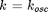
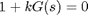
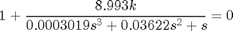
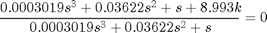
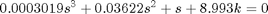
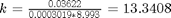
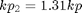
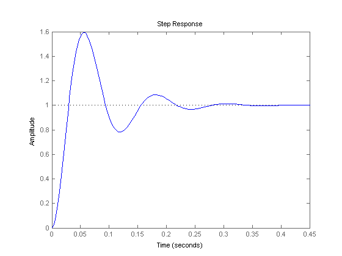

Contents
ES868 – Pré Relatório Lab 3
Controle de plantas eletrˆonicas utilizando um controlador PID digital
Turma A - 16/03/2015
- Augusto Miranda Garcia - 104627
- Guilherme de Oliveira Souza – 117093
- Vinícius Ragazi David - 120258
load ../G.mat s = tf('s');
Controlador proporcional
Controlador de Ziegler Nichols
O primeiro passo no método de Ziegler Nichols é encontrar

que deixa a planta no limiar de estabilidade quando em malha fechada:Para isso pode ser usado o critério de Routh com a equação característica:




Com o critério de Routh chega-se em:

k_osc = 13.3408; GC_mf = feedback(G*k_osc,1); poles = esort(pole(GC_mf)); w_osc = abs(poles(1)); T_osc = 2*pi/w_osc; kp = 0.6*k_osc; Ti = T_osc/2; Td = T_osc/8; C = kp*(1 + 1/(Ti*s) + Td*s)
C =
0.005963 s^2 + 0.4369 s + 8.004
-------------------------------
0.05459 s
Continuous-time transfer function.
Usando o sisotool para ajustar o valor de kp e melhorar o desempenho do controlador, obtemos

kp_2 = 1.31*kp; C_2 = 1.31*C
C_2 =
0.007811 s^2 + 0.5724 s + 10.49
-------------------------------
0.05459 s
Continuous-time transfer function.
Cálculo dos valores de desempenho
sistema = feedback(G*C_2, 1); step(sistema)
